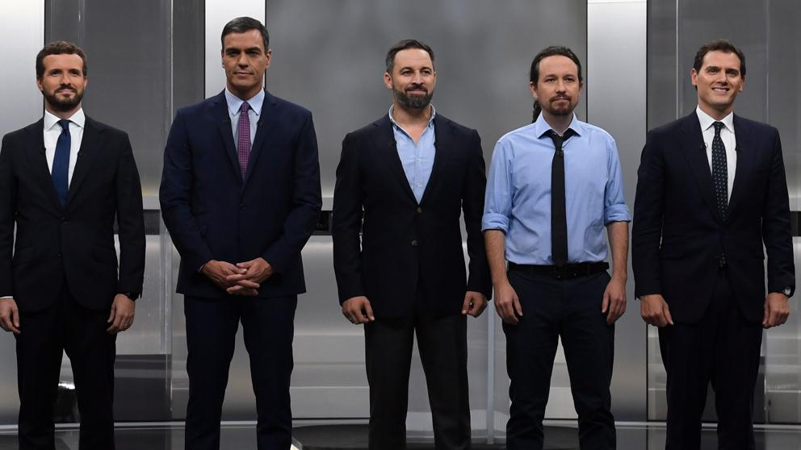

Debate a 5 del 4 de Noviembre de 2019
El debate a cinco se convirtió este lunes en el acto central de la campaña de las elecciones generales
del próximo 10 de noviembre.
Una contienda en la que Pedro Sánchez, Pablo Casado,
Albert Rivera, Pablo Iglesias y
Santiago Abascal protagonizaron numerosos enfrentamientos.
Bloques del debate
- Cohesión territorial
- Economía
- Problemas sociales e igualdad
- Temas internacionales
- Calidad democrática
Tiempos establecidos
- Duración: 2 horas y 45 minutos
- 1 minuto de presentación por candidato
- 5 minutos por bloque para candidato
- No hay tiempo de alegato final
- Un candidato sin tiempo no puede dar réplica ni por alusiones
Frases mas destacadas
Pedro Sanchez
- Ustedes dos representan a la derecha cobarde ante una ultra derecha agresiva
- Anuncio una nueva asignatura por la concordia, educación en valores cívicos y constitucionales
Pablo Casado
- ¿Cataluña es una nación? ¿Cuántas naciones hay en España? Le he preguntado cúantas naciones
hay en España
- La trae a Madrid, donde gobierna el PP. A Barcelona no lleva, ¿verdad, señor Sánchez?
Pablo Iglesias
- Frente a la crisis, Constitución española. La Constitución no puede ser un adoquín para arrojar al
rival político sino una caja de herramientas para dar soluciones a la gente
- Usted no me va a dar lecciones de ser español. Me siento orgulloso de ser español. No es cuestión
de tener la bandera muy grande
ALbert Rivera
- Este adoquín representa una amenaza para el Estado de derecho en mi tierra
- Le gustan mucho las trampas y las tesis
Santiago Abascal
- El Estado de las autonomías ha premiado a las regiones gobernadas por los más traidores
- Propone introducir en el código la exaltación de los totalitarismos y va a acabar ilegalizando a
Iglesias que es el único que se ha declarado comunista
